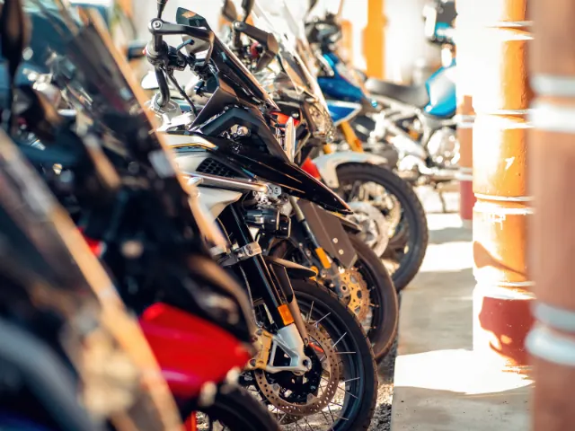
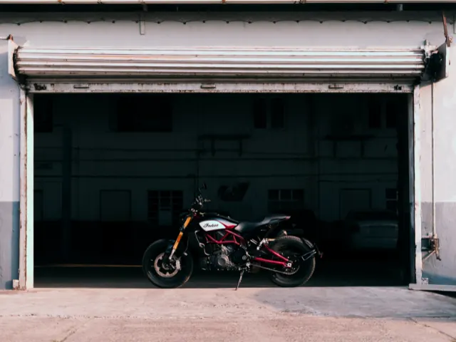

Motor stallen in Nijmegen: tips voor een veilige en optimale opslag
Gepubliceerd op 5 november 2024

Je motor staat het veiligst wanneer hij overdekt en in een goed beveiligde opslagruimte is gestald. Dit beschermt niet alleen tegen regen en wind, maar verkleint ook het risico op diefstal. Buiten staan maakt je motor namelijk kwetsbaar voor de elementen, met roest als gevolg, en ook vandalen hebben hem dan sneller in het vizier. Dus, als je de keuze hebt, kies altijd voor een overdekte, veilige stalling. Waar moet je dan precies op letten om je motor optimaal te beschermen?
Bepaal jouw opslagbehoefte
Voordat je een opslagruimte kiest van Garagepark, is het slim om eerst te kijken naar jouw eigen situatie. Hoe vaak gebruik je je motor eigenlijk? Gebruik je hem alleen af en toe of voornamelijk in de zomer? Dan is een vaste garage misschien overbodig. Maar als je vaak rijdt, worden bereikbaarheid en locatie belangrijker. Een stalling dichtbij huis maakt het dan een stuk makkelijker om snel bij je motor te kunnen. Wat past het beste bij jouw gebruik?
Motor buiten stallen: liever niet
Een motor buiten stallen lijkt misschien een voordelige optie, maar heeft ook zo zijn nadelen. Zelfs met een stevige motorhoes blijft je motor kwetsbaar voor regen, vorst en andere weersomstandigheden. Bovendien trekt een opvallende hoes vaak de aandacht van dieven en vandalen, vooral als de motor op een openbaar terrein staat. Daarom is het, als je de mogelijkheid hebt, altijd beter om je motor binnen te stallen voor optimale bescherming.

Garage of schuur
Heb je een eigen garage of schuur? Dan heb je al een prima plek om je motor veilig te stallen! Zorg er wel voor dat de ruimte schoon en droog is; dit voorkomt roest en andere schade. Een goed afgesloten en goed onderhouden ruimte geeft je motor optimale bescherming tegen weersinvloeden, zodat je hem zonder zorgen kunt wegzetten.
Parkeergarage
Woon je in de stad en gebruik je je motor vaak? Dan kan een parkeergarage een handige oplossing zijn, vooral voor regelmatig gebruik. Maar als je een plek zoekt voor lange termijn opslag, is dit meestal minder ideaal. Openbare parkeergarages bieden vaak niet genoeg beveiliging tegen diefstal en de kosten kunnen op termijn flink oplopen.

Garagebox huren of kopen
Wil je je motor echt goed beschermen? Dan kun je beter een overdekte opslagruimtehuren Nijmegen. Kies voor veilige, goed uitgeruste stallingsplekken met een hoog beveiligingsniveau en handige voorzieningen, zoals elektriciteit en sanitaire voorzieningen. Voor motorrijders die waarde hechten aan een veilige, toegankelijke plek, is een garagebox of opslagruimte dus ideaal. In Nijmegen zijn er speciale opslagruimtes voor motoren, uitgerust met de nieuwste beveiligingssystemen. Denk aan hekwerk met stroomschokbeveiliging, camera’s en strategische verlichting. Toegang krijg je via een persoonlijke keytag en de units zijn voorzien van elektriciteit, zodat je makkelijk onderhoud aan je motor kunt doen.
Tips voor langdurige motorstalling
En als je je motor voor een lange tijd wilt stallen, zijn er een aantal dingen die je moet doen. Laad je accu bijvoorbeeld volledig op, koppel hem los en zet hem bij voorkeur op een koele plek of sluit hem aan op een druppellader, zodat hij niet leegloopt. Daarnaast moeten de banden goed zijn opgepompt en gebruik een paddockstand om vervorming te voorkomen. Controleer ook of de motorolie, koelvloeistof en remvloeistof op peil zijn om uitdroging en roest tegen te gaan, en vul de tank helemaal om condens en roest te vermijden. Maak je motor ook echt grondig schoon, vet de metalen delen in tegen roest en gebruik een hoes. Doe dit ook in een overdekte ruimte, om stof en kleine beschadigingen te voorkomen. Zo blijft je motor goed beschermd!